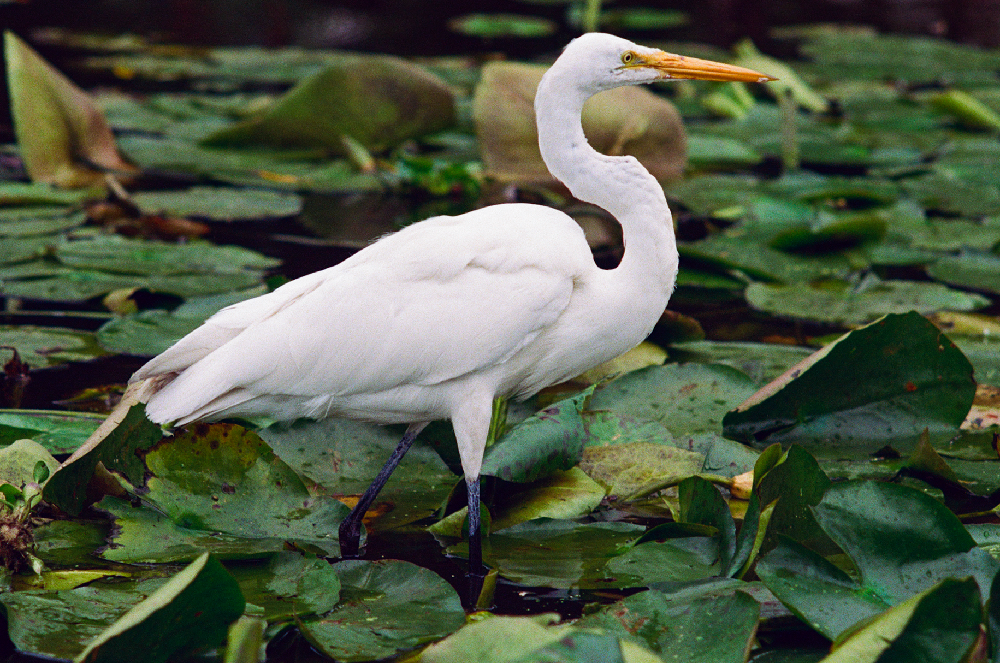
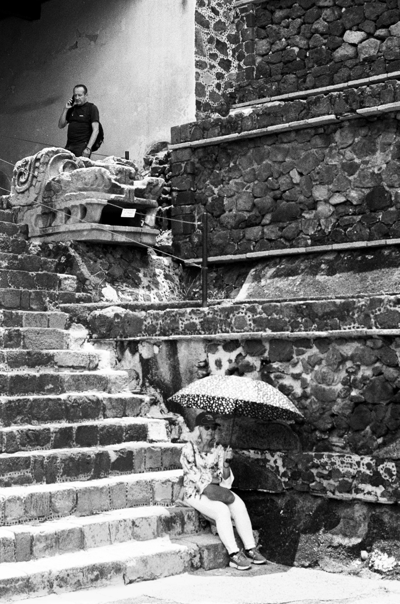
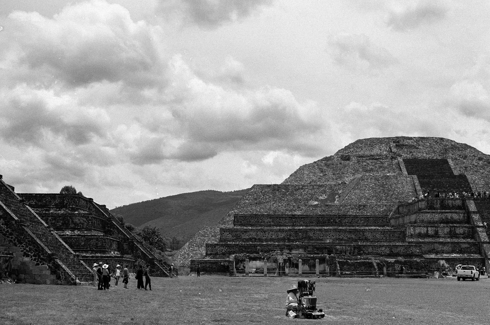
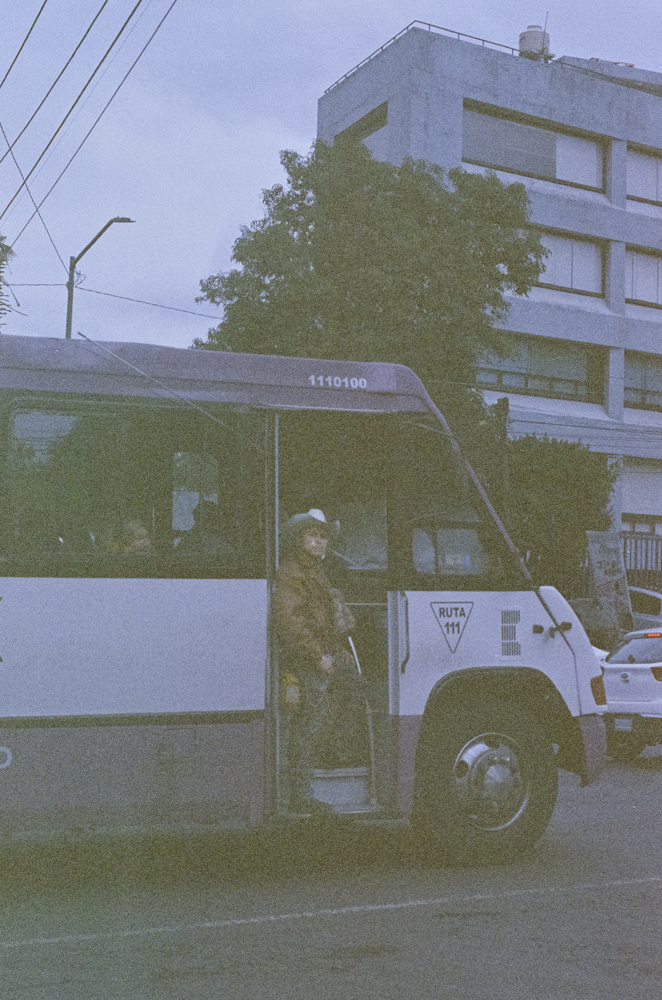
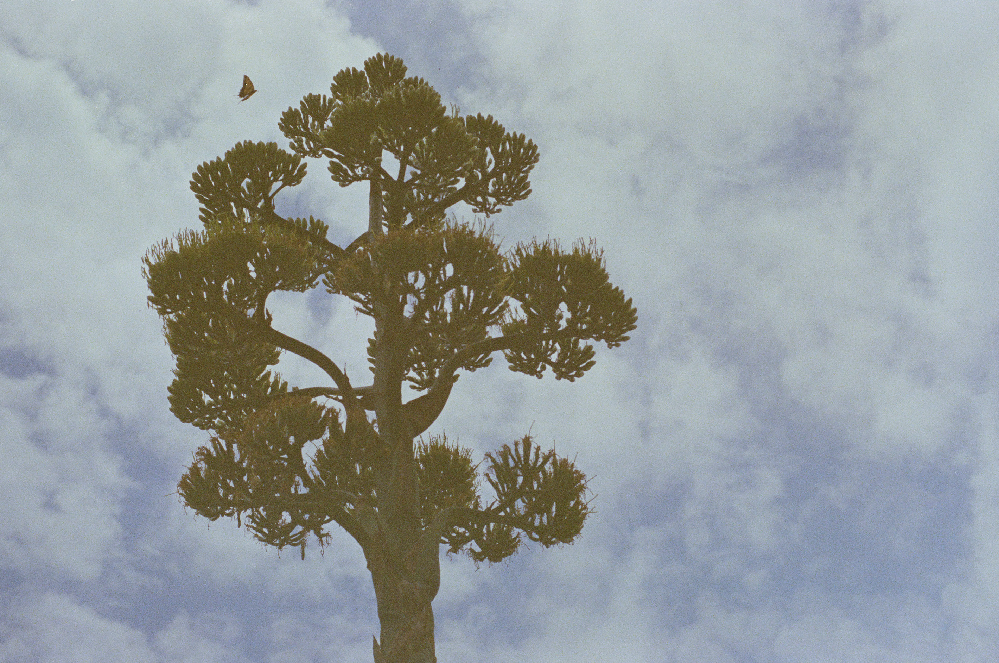
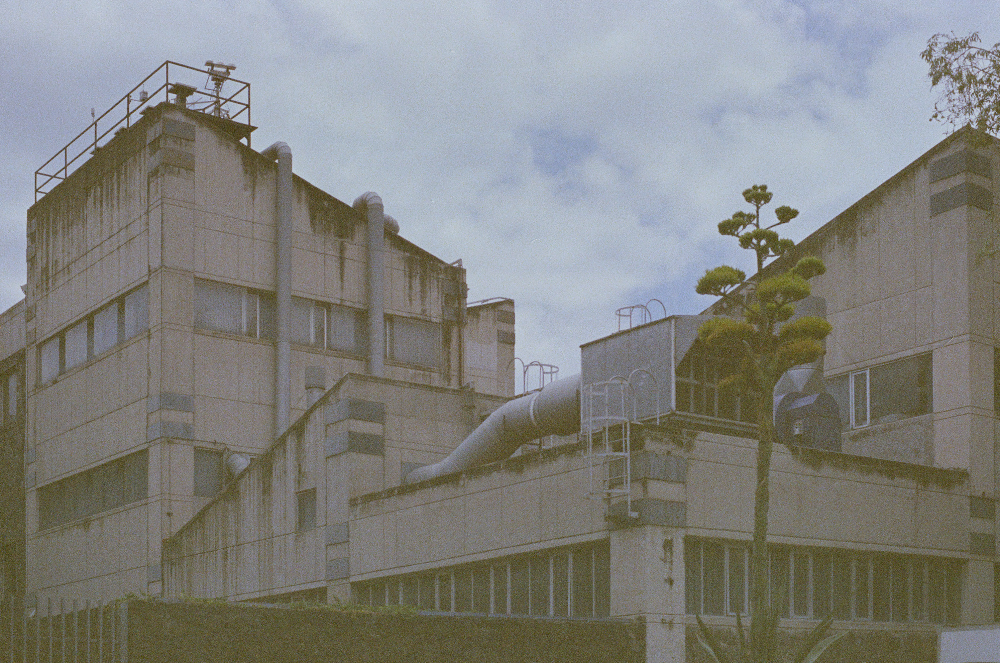
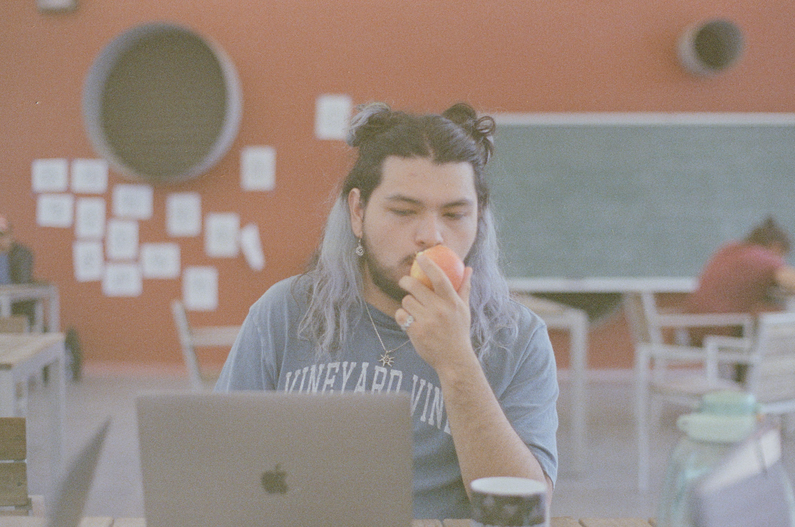

Gia y Pablo en el baño de la Casa Luis Barragán, 2025

Garza blanca (Ardea alba) en Xochimilco, 2025Perro de agua (Nycticorax nycticorax) en Xochimilco, junio 2025Kodak Tri-X en Olympus OM1.

Teotihuacán, junio 2025Kodak Tri-X en Olympus OM1.

Pirámide de la Luna en Teotihuacán, junio 2025Kodak Tri-X en Olympus OM1.Giana en Café Avellaneda, junio 2025Kodak Tri-X en Olympus OM1.

Un muchacho con sombrero me pidió una foto en la carretera Picacho-Ajusco, mayo 2025Expired Kodak Vision 3 en Olympus OM1.

El quiote de un maguey en la Facultad de Ciencias, mayo 2025Expired Kodak Vision 3 en Olympus OM1.

Facultad de Ciencias UNAM, mayo 2025Expired Kodak Vision 3 en Olympus OM1.

Emiliano en la terraza del Instituto de Matemáticas, mayo 2025Expired Kodak Vision 3 en Olympus OM1.Alberca de Ciudad Universitaria, mayo 2025Expired Kodak Vision 3 en Olympus OM1.Biblioteca Central de Ciudad Universitaria, mayo 2025Expired Kodak Vision 3 en Olympus OM1.Biblioteca Central de Ciudad Universitaria, mayo 2025.Expired Kodak Vision 3 en Olympus OM1.Gia echando gas en Tucson, abril 2025.Expired Kodak UltraMax 400 en Olympus Accura.